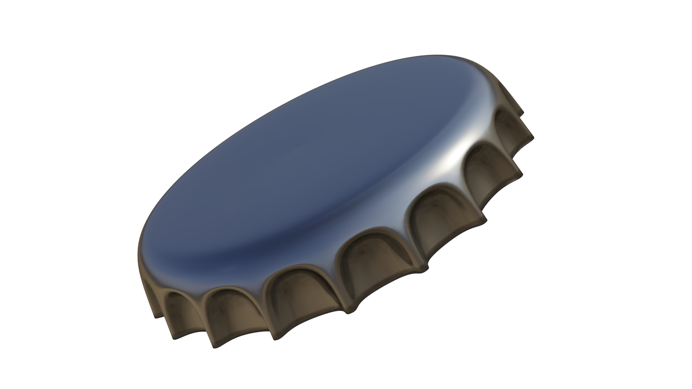

cap

fast and configurable proxy with MITM
Clone the repository
git clone https://github.com/tiredkangaroo/bigproxy.git
Change the working directory to the Git Repository folder
Install dependencies (you must have golang and node + npm)
go mod tidy && npm i --prefix manager
Build the project app
go run make.go app
Run 'cap.app'
success!